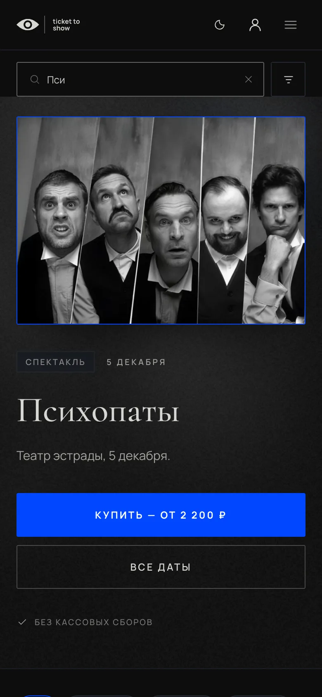

Человек касается строки поиска — Safari увеличивает страницу. Правая часть шапки уходит за край экрана, и после поиска страницу приходится уменьшать двумя пальцами.
Safari на iPhone увеличивает страницу, когда фокус попадает в поле с текстом мельче 16 px: так он делает мелкий ввод читаемым. Так же ведут себя все браузеры на iPhone — они работают на движке Safari.
У нас текст в строке поиска — 12 px, в полях форм ядра — 14 px. Значит, увеличение срабатывает на любом поле.
На сенсорных экранах текст в полях ввода — не мельче 16 px. Внешний вид строки почти не меняется: она той же высоты, крупнее только набранный текст и подсказка внутри.
/* iOS увеличивает страницу при фокусе на поле мельче 16 px */
@media (max-width: 1080px), (pointer: coarse) {
input, select, textarea { font-size: 16px; }
}Правило задаёт только размер шрифта в полях, остальное оформление не трогает. pointer: coarse ловит планшеты в горизонтальном положении, где экран шире 1080 px.
Чего не делать: запрещать масштаб через maximum-scale=1 или user-scalable=no в <meta name="viewport">. На iPhone это тоже уберёт увеличение, но на Android человек больше не сможет увеличить страницу пальцами — это нарушает требование доступности WCAG 1.4.4 (увеличение текста до 200 %).

| Где | Поле | Сейчас | Состояние |
|---|---|---|---|
| Главная (макет) | Строка поиска в шапке, .hdr-search input | 12 px | Исправлено в site/home-new-tiles.html |
| Личный кабинет | Строка поиска в шапке, .hdr-search input | 12 px | Нужно то же правило |
| Редизайн v2 | Строка поиска в шапке | 12 px | Нужно то же правило |
| Ядро: формы | .form-input — вход, данные покупателя, оформление | 14 px | Нужно то же правило |
| Ядро: промокод | .order-promo .form-input | 12 px | Нужно то же правило |
| Ядро: поиск в hero | .hero-search-input | 14 px | Нужно то же правило |
| Ядро: фильтр цены | .filter-price-input | 14 px | Нужно то же правило |
Проще всего — одно общее правило из раздела «Решение» на весь сайт: оно закроет и поля, которых в этом списке нет.